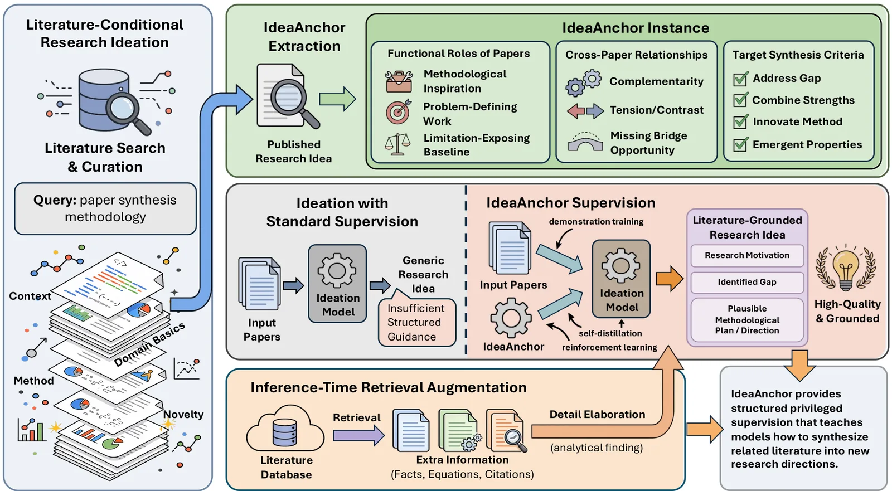
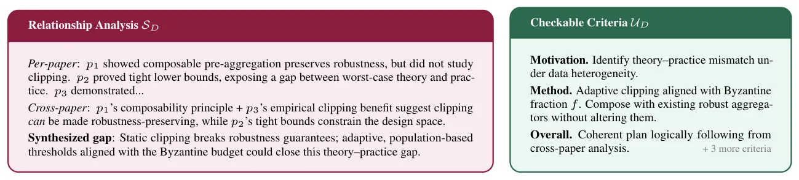
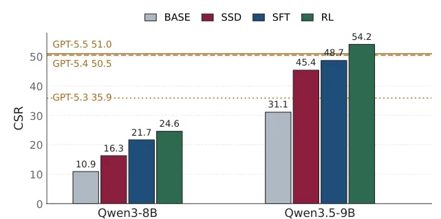
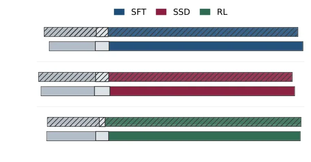

O problema: LLMs não sabem sintetizar literatura
Pesquisa científica raramente começa do zero. Antes de qualquer descoberta, pesquisadores leem um conjunto de papers relacionados, identificam o que cada um contribui, localizam lacunas não resolvidas e cristalizam uma direção de pesquisa que é ao mesmo tempo nova e defensável. Esse processo exige duas capacidades distintas: síntese criativa — analisar trabalhos anteriores em alto nível, reconhecer gaps entre múltiplas contribuições e formular uma direção que nenhum paper isolado aborda — e elaboração de detalhes — preencher a abordagem imaginada com especificidades metodológicas concretas extraídas da substância técnica dos trabalhos anteriores.
Modelos de linguagem grandes já demonstraram capacidade impressionante em tarefas científicas downstream: sumarizar papers, raciocinar sobre eles, até executar experimentos bem definidos. Mas gerar ideias de pesquisa novas e acionáveis continua sendo um desafio. Dado um conjunto de papers relacionados, LLMs tendem a produzir visões gerais fluentes ou misturas rasas de conceitos, que frequentemente falham em identificar gaps de pesquisa significativos e desenvolver métodos concretos ancorados em evidência acadêmica existente.
Estudos recentes mostram que existe uma lacuna distribucional consistente entre ideias geradas por LLMs e o gosto de pesquisa humano: ideias de LLM se concentram em oportunidades tipo ponte e métodos de síntese, enquanto papers humanos enquadram gaps e constroem contribuições de maneiras muito mais diversas. Esforços recentes tentam resolver isso através de geração de planos condicionais com recompensas de rubrica, feedback de execução em ambientes sandbox, ou inversão de hipóteses de um único paper. Mas essas abordagens ou assumem que o objetivo de pesquisa já está dado, requerem ambientes de execução específicos de domínio, ou não suportam síntese multi-paper.
A ideia: especificações estruturadas como sinal privilegiado
Os autores argumentam que o gargalo da ideação é a ausência de sinais de treinamento que capturem o que faz uma boa ideia de pesquisa emergir de trabalhos anteriores. Para resolver isso, eles introduzem IdeaAnchor: especificações por instância, derivadas da literatura, que codificam os papéis funcionais que cada paper de entrada deve desempenhar, os gaps que devem ser identificados e os padrões que devem ser aproveitados na síntese.
Um IdeaAnchor é extraído retrospectivamente de papers publicados. Para cada paper alvo, o sistema identifica quais trabalhos anteriores foram citados, qual papel funcional cada um desempenhou (por exemplo: fornecer uma técnica base, expor uma limitação, validar em um domínio diferente), como esses papéis se relacionam entre si, e quais critérios de síntese verificáveis o paper alvo satisfaz. Essa informação estruturada torna explícita a lógica de síntese que normalmente permanece implícita.
O IdeaAnchor serve como interface de dados unificada para três paradigmas de treinamento distintos. Primeiro, demonstração guiada por anchor: um LLM forte externo recebe a lista de papers de entrada junto com a instância IdeaAnchor correspondente e produz demonstrações de alta qualidade que o modelo alvo aprende via fine-tuning supervisionado. Segundo, auto-destilação baseada em anchor: na ausência de um professor externo, o próprio modelo alvo com IdeaAnchor pode se auto-destilar — as saídas condicionadas ao anchor servem como alvos de auto-treinamento. Terceiro, aprendizado por reforço com privilégio de anchor: a informação privilegiada no IdeaAnchor é usada como recompensa de RL, onde durante GRPO o juiz de recompensa verifica cada saída contra critérios definidos pelo anchor.

Como funciona a extração de IdeaAnchors
Para construir dados de treinamento em escala, os autores reconstroem retrospectivamente como contribuições publicadas se baseiam em trabalhos anteriores. O processo começa com papers do arXiv e suas citações. Para cada paper alvo, eles identificam um subconjunto de 5 a 7 papers citados que formam o contexto de síntese — trabalhos que não apenas são referenciados, mas que desempenham papéis funcionais distintos na construção da ideia.
A extração tem três componentes estruturados. Primeiro, análise de papéis por paper: para cada trabalho citado, o sistema identifica qual insight aprendido ele fornece (por exemplo: 'demonstra que agregação robusta pode tolerar trabalhadores bizantinos', ou 'mostra que métodos baseados em mediana sofrem com alta dimensionalidade'). Segundo, análise de relações entre papers: identifica como os trabalhos se relacionam e qual gap emerge da síntese (por exemplo: 'Paper A fornece robustez mas não escala; Paper B escala mas não é robusto; gap: nenhum método combina ambos'). Terceiro, critérios verificáveis: extrai afirmações concretas e verificáveis que o paper alvo satisfaz, ancoradas na literatura de entrada.
Os autores mineraram IdeaAnchors de papers publicados em machine learning e ciências naturais. Cada instância de treinamento consiste nos títulos e abstracts de 5 a 7 papers anteriores, junto com o IdeaAnchor privilegiado extraído do paper alvo. Os três paradigmas de treinamento diferem apenas em como essa informação privilegiada é convertida em sinal de aprendizado.

Treinamento: três paradigmas complementares
No paradigma de demonstração guiada por anchor, os autores usam GPT-4o-mini como professor. O modelo recebe a lista de papers de entrada junto com o IdeaAnchor e gera uma proposta de pesquisa estruturada. Essa proposta segue um formato fixo: título, método proposto e resultados esperados. O modelo alvo (Qwen2.5-8B ou Qwen2.5-9B) então aprende via fine-tuning supervisionado sobre essas demonstrações. O IdeaAnchor guia o professor a utilizar melhor a literatura de entrada, produzindo demonstrações de maior qualidade.
Na auto-destilação baseada em anchor, não há professor externo. O próprio modelo alvo é solicitado com o anchor e gera uma proposta condicionada a essa especificação estruturada. Essa saída, que se beneficia de ver a especificação, serve como alvo de auto-treinamento. O modelo então aprende a produzir saídas semelhantes mesmo quando o anchor não está disponível na inferência. Isso cria um loop de auto-aperfeiçoamento: o modelo destila o conhecimento embutido no IdeaAnchor em seus próprios parâmetros.
No aprendizado por reforço com privilégio de anchor, os autores usam GRPO (Group Relative Policy Optimization). Durante o treinamento, o modelo gera múltiplas propostas candidatas para cada entrada. Um juiz (GPT-4o-mini) então pontua cada proposta item por item contra os critérios definidos pelo anchor. Essas pontuações servem como recompensas para otimizar a política. Através de otimização iterativa de recompensa, o modelo de política gradualmente aprende a gerar conteúdos que se alinham com padrões de publicações reais.
Experimentos: setup e métricas
Todos os modelos treinados são inicializados a partir de Qwen2.5-8B e Qwen2.5-9B. Os autores usam o corpus minerado de IdeaAnchor descrito anteriormente — cada instância de treinamento consiste em 5 a 7 papers anteriores representados por títulos e abstracts, junto com o IdeaAnchor privilegiado extraído do paper alvo. Os três paradigmas de treinamento diferem apenas em como essa informação privilegiada é convertida em sinal de aprendizado.
Para avaliação automatizada, os autores criaram um benchmark com 924 instâncias derivadas de papers aceitos no ICLR 2026. Para cada instância, GPT-4o julga a proposta gerada contra os critérios verificáveis refinados por especialistas. Cada critério é marcado como satisfeito apenas se a proposta apresenta uma afirmação concreta, ancorada na literatura, que atende ao critério mantendo solidez básica e viabilidade. A métrica principal é a taxa de satisfação de critérios (CSR), calculada como média entre todos os itens de rubrica no benchmark.
Avaliação humana complementa as métricas automatizadas. Especialistas realizam comparações pareadas cegas entre propostas do modelo base Qwen2.5-8B e variantes treinadas sob entrada idêntica. Eles classificam força geral e avaliam ancoragem na literatura, novidade sintética, especificidade metodológica e viabilidade. A ordem de apresentação é randomizada e empates são permitidos.

Resultados: treinamento melhora síntese de literatura
Os resultados mostram melhorias consistentes na qualidade de ideação. No benchmark ICLR 2026 com 924 instâncias, todas as três abordagens de treinamento superam o modelo base Qwen2.5-8B. O fine-tuning supervisionado (SFT) com demonstrações guiadas por anchor alcança CSR de aproximadamente 14%, comparado a cerca de 10% do modelo base. Auto-destilação (SSD) atinge desempenho similar, demonstrando que o modelo pode aprender efetivamente de suas próprias saídas condicionadas ao anchor. O treinamento por reforço (RL) alcança os maiores ganhos, chegando a aproximadamente 16% de CSR.
A recuperação aumentada na inferência fornece ganhos complementares. RAG-Full e RAG-Summary melhoram consistentemente todas as variantes de modelo. Combinar treinamento baseado em anchor com recuperação na inferência produz o melhor desempenho geral: a variante RL com RAG-Summary atinge cerca de 22% de CSR, mais que o dobro do modelo base. Os resultados se mantêm para Qwen2.5-9B, com padrões similares de melhoria.
Avaliação humana confirma os ganhos automatizados. Especialistas preferem propostas de modelos treinados sobre o baseline em avaliações pareadas. Para SFT, especialistas humanos favorecem o modelo treinado em aproximadamente 45% dos casos versus 25% para o base, com 30% de empates. Auto-destilação e RL mostram padrões similares. Julgamentos de GPT-4o se alinham bem com preferências humanas, validando a métrica automatizada.

Decomposição funcional: síntese versus elaboração
Uma análise revela decomposição funcional clara. Treinamento baseado em anchor fortalece principalmente a síntese criativa: a capacidade de analisar trabalhos anteriores em alto nível, reconhecer gaps entre múltiplas contribuições e formular uma direção de pesquisa que nenhum paper isolado aborda. Isso se manifesta em melhor identificação de gaps e enquadramento de contribuições.
Recuperação aumentada, por outro lado, melhora principalmente a elaboração de detalhes: preencher a abordagem imaginada com especificidades metodológicas concretas extraídas da substância técnica de trabalhos anteriores. Modelos com recuperação fornecem descrições de método mais concretas e tecnicamente fundamentadas, mesmo quando a síntese de alto nível é similar.
Combinar ambos produz o melhor desempenho. Treinamento baseado em anchor ensina o modelo a identificar que tipo de ideia sintetizar da literatura. Recuperação na inferência fornece os detalhes factuais e metodológicos para elaborar essa ideia de forma concreta e acionável. Essa separação de responsabilidades — síntese aprendida via treinamento, elaboração via recuperação — explica por que a combinação supera qualquer abordagem isolada.
Transferência e generalização
Os autores investigam se o comportamento de síntese aprendido transfere através de escala de treinamento, domínios e ideação dirigida por tópico aberto. Experimentos mostram que modelos treinados em anchors de machine learning mantêm melhorias quando avaliados em instâncias de ciências naturais, embora com ganho reduzido. Isso sugere que padrões de síntese generalizam parcialmente através de domínios, mas dados específicos de domínio ajudam.
Dinâmicas de treinamento revelam convergência consistente. A taxa de satisfação de critérios aumenta através de estágios de treinamento para todos os três paradigmas. Curiosamente, modelos treinados apenas em anchors de ciências naturais mostram desempenho reduzido no mesmo benchmark de machine learning, confirmando que a especificidade de domínio importa para síntese de alta qualidade.
Em ideação dirigida por tópico — onde a entrada é uma consulta de tópico em vez de papers específicos — modelos treinados ainda superam o baseline, mas a margem é menor. Isso indica que o treinamento baseado em anchor ensina principalmente como sintetizar literatura dada, não como gerar ideias de pesquisa de forma completamente não fundamentada. A dependência de literatura de entrada é uma característica, não um bug: ideias de pesquisa reais emergem de trabalhos anteriores específicos.
O que fica em aberto
O paper demonstra que especificações estruturadas podem ensinar LLMs a sintetizar literatura em ideias de pesquisa, mas várias questões permanecem abertas. Primeiro, a qualidade das ideias geradas em comparação com ideias de pesquisadores humanos reais não é diretamente avaliada — o benchmark usa critérios extraídos de papers publicados, mas não compara ideias geradas com propostas humanas em competição direta.
Segundo, o sistema depende de extração retrospectiva de IdeaAnchors de papers já publicados. Não está claro como construir anchors para literatura verdadeiramente emergente onde os padrões de síntese ainda não foram demonstrados em publicações. Terceiro, a avaliação foca em satisfação de critérios verificáveis, mas não mede se as ideias geradas levariam a pesquisa bem-sucedida se executadas.
Quarto, o trabalho não explora como pesquisadores humanos poderiam interagir com o sistema em um fluxo de trabalho de pesquisa real — se seria usado para brainstorming inicial, refinamento de ideias existentes, ou identificação de gaps na literatura. Finalmente, questões de viés permanecem: se modelos treinados em papers publicados reproduzirão vieses existentes em quais tipos de ideias são consideradas válidas ou interessantes pela comunidade acadêmica.
O que fica
- IdeaAnchor usa especificações estruturadas extraídas de papers publicados — papéis funcionais, relações entre trabalhos, critérios de síntese — como sinal de treinamento para ensinar LLMs a gerar ideias de pesquisa.
- Três paradigmas de treinamento (demonstração guiada, auto-destilação, RL) melhoram consistentemente a qualidade de ideação, dobrando a taxa de satisfação de critérios no benchmark ICLR 2026.
- Decomposição funcional: treinamento baseado em anchor fortalece síntese criativa, recuperação na inferência melhora elaboração de detalhes, e combinar ambos produz o melhor desempenho.
- Limitações incluem dependência de papers de entrada específicos, avaliação focada em critérios verificáveis (não em execução real), e questões abertas sobre comparação direta com ideias humanas.
Paper original: IdeaAnchor: Teaching LLMs to Turn Literature into Research Ideas
Comentários
Nenhum comentário ainda. Seja o primeiro.